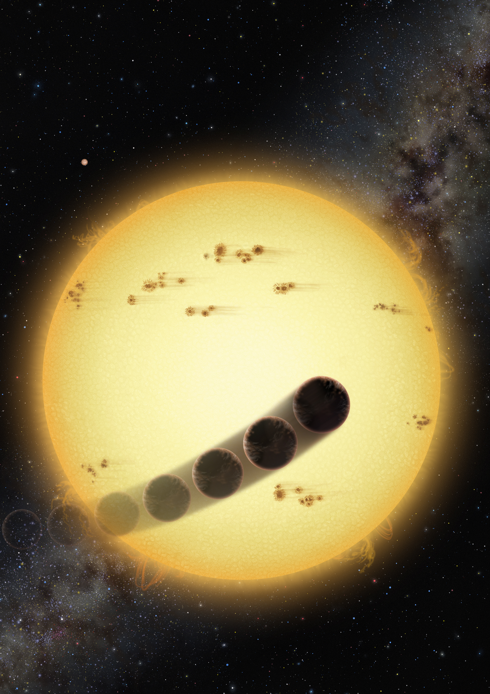

|  credit: Lynette Cook | Retrograde Hot Jupiters |
|
|
The discovery of the Jupiter like planet orbiting the nearby Sun-like star 51 Pegasi in 1995 had marked an era of new theoretical challenges. Specifically, in recent years planet observations showed that planetary systems are common and exhibit variety of characteristics. Radial velocity measurements, microlensing experiments, direct imaging and photometric transit observations reveled a wide range of masses and distances from the host star. The growing flow of new observation introduced many puzzles and raised many questions, such as; is there a common formation mechanism of the different extrasolar systems? what are the dominate evolution processes? is our solar system a unique configuration? Future and current observations by Kepler and CoRoT are expected to produce unprecedented detailed planets detections. However, these observations are relatively unassertive to planet far away from the star. Thus, direct imaging (such as Fomalhaut b, Kalas et al. 2008 already observed by HST) and microlensing experiments are vital for completing the picture. An important clue for the formation process may lay in the spin-orbit measurements, via the Rossiter-McLaughlin effect (see Gaudi & Winn 2007). Different formation and evolution mechanism are expected to give different distribution of this value. Thus, the spin-orbit angle presents us with a wonderful probe to disentangle the different models. The search for extra-solar planets has led to the surprising discovery of many Jupiter-like planets in very close proximity to their host star, the so-called ``hot Jupiters'' (HJ hereafter). Even more surprisingly, many of these HJ have orbits that are eccentric or highly inclined with respect to the equator of the star, and some are even in retrograde orbits (see Triaud et al. 2010). This poses a unique challenge to all planet formation models. How they get so close to the star in such orbits remains an open question. In our general treatment of secular interactions between two orbiting bodies we allow for the magnitude and orientation of both orbital angular momenta to change. The outer body (either a planet or a brown-dwarf or even a binary star, as long as its not to distant) gravitationally perturbs the inner planet on time scales long compared to the orbital period (i.e., we consider the secular evolution of the system). We define the orientation of the inner orbit with respect to the invariable plane of the system (perpendicular to the total angular momentum): a prograde (retrograde) orbit has i1<90 degrees (i1>90 degrees), where i1 is the inclination of the inner orbit with respect to the total angular momentum vector. Note that the word 'retrograde' is also used in the literature to indicate orbital motion counter to the stellar spin. The directly observed parameter is actually the projected angle between the spin axis of the star and the orbital angular momentum of a HJ. Our proposed mechanism can produce HJs that are 'retrograde' both with respect to the stellar spin and with respect to the total angular momentum. By contrast, a distant stellar companion can only succeed in the former. Henceforth we will use the term 'retrograde' only to indicate an orbit with i1>90 degrees as define above. We assume a hierarchical configuration, with the outer perturber on a much wider orbit than the inner one. In the secular approximation the orbits may change shape and orientation but the semi-major axes are strictly conserved in the absence of tidal dissipation. In particular, the Kozai-Lidov mechanism produces large-amplitude oscillations of the eccentricity and inclination when the initial relative inclination between the inner and outer orbits is sufficiently large. We have derived the secular evolution equations to octupole order using Hamiltonian perturbation theory. In contrast to previous derivations of ``Kozai-type'' evolution, our treatment allows for changes in the z-components of the orbital angular momenta (i.e., the components along the total angular momentum). The octupole-order equations allow us to calculate the evolution of systems with more closely coupled orbits and with planetary-mass perturbers. The octupole-level terms can give rise to fluctuations in the eccentricity maxima to arbitrarily high values, in contrast to the regular evolution in the quadrupole potential, where the amplitude of eccentricity oscillations is constant. Our treatment shows that the eccentricity can occasionally reach a much higher value than in the regular ``Kozai cycles'' calculated to quadrupole order. Thus, the pericenter distance will occasionally shrink on a short time scale (compared to the Kozai period), and the planet can then suddenly be tidally captured by the star. We propose to call this ``Kozai capture.'' Kozai capture provides a new way to form HJs. If the capture happens after the inner orbit has flipped the HJ will appear in a retrograde orbit. During the evolution of the system the inner orbit shrinks in steps whenever the dissipation becomes significant, i.e., near unusually high eccentricity maxima. The inner orbit can then eventually become tidally circularized. This happens near the end of the evolution, on a very short time scale. In this final step, the inner orbit completely and quickly decouples from the outer perturber, and the orbital angular momenta then become constant. There are two main routes to forming a HJ through the dynamical evolution of the systems we consider here. In the first, tidal friction slowly damps the growing eccentricity of the inner planet, resulting in circularized, prograde HJs. In the second, a sudden high-eccentricity spike in the orbital evolution of the inner planet is accompanied by a flip of its orbit. The planet is then quickly circularized into a retrograde short-period orbit. We can estimate the relative frequencies of these two types of outcomes using Monte Carlo simulations. We provide a representative example: consider systems where the inner planet was formed in situ at a1=5 AU with zero obliquity (orbit in the stellar equatorial plane) and with some small eccentricity e1=0.01, while the outer planet has a2= 51 AU. The masses are m1=1 Msun m2=1 MJ and m3=3 MJ. We draw the eccentricity of the outer orbit from a uniform distribution and the mutual inclination from a distribution uniform in $\cos i$ between 0 and 1 (i.e., isotropic among prograde orbits). For this case we find that, among all HJs that are formed, about 7% are in truly retrograde motion (i.e., with respect to the total angular momentum) and about 50% are orbiting counter to the stellar spin direction. The high observed incidence of planets orbiting counter to the stellar spin direction may suggest that planet--planet secular interactions are an important part of their dynamical history. Relevant Paper:
In the media:
|